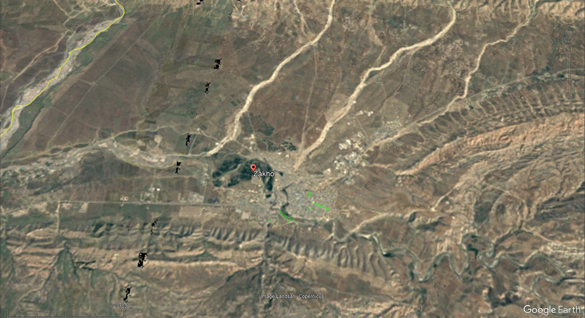
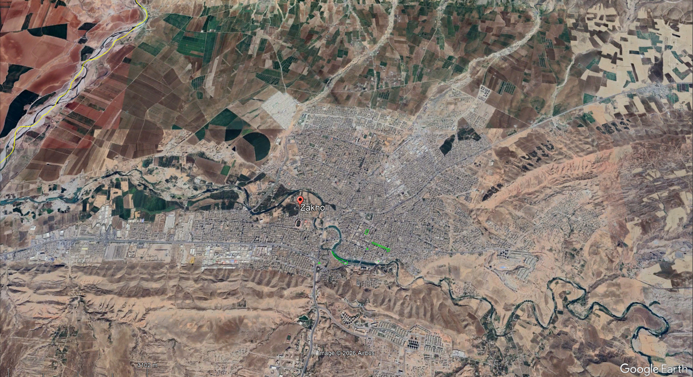

All photo locations
Click a numbered marker to go directly to that photo.
All photos
Shown in the order they were taken, with the known location beside every photo. Select a photo to open the full-size file.
Twenty photographs taken on 6 November 2025, with each known location shown beside its photo.


Click a numbered marker to go directly to that photo.
Shown in the order they were taken, with the known location beside every photo. Select a photo to open the full-size file.